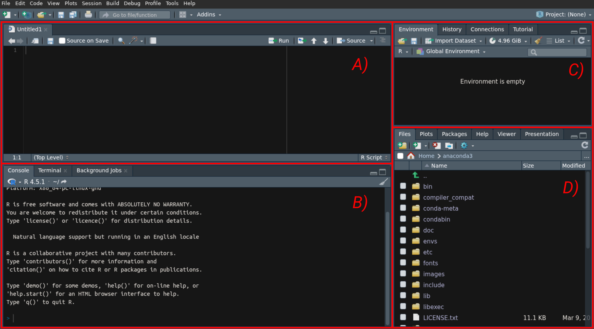

################################################################################
# Titre 1 ----
################################################################################
## Sous titre 1.1 --------------------------------------------------------------
# Commentaire classique
### Sous titre 1.1.1 -----------------------------------------------------------
# Commentaire classique
################################################################################
# Titre 2 ----
################################################################################
## Sous titre 2.1 --------------------------------------------------------------
# code etc.1 Introduction à R et RStudio
Comme dans la majorité des langages interprétés, quand on installe R, une console interactive est installée en même temps. Vous pouvez y accéder en cherchant R dans vos programmes ou en effectuant les opérations ctrl+R (ouvrir l’exécuteur de commmande) > R > enter. C’est comme quand vous ouvrez un terminal powershell sous Windows, sauf qu’au lieu d’écrire du powershell, vous écrivez du R.
Dans l’absolu, on pourrait écrire nos scripts dans la console directement mais ce serait très peu pratique. Aussi, quand on code, on utilise un Environnement de Développement (IDE en anglais), et ce, quelque soit le langage que l’on utilise. Ces derniers intègrent des tas de fonctionnalités pour vous simplifier la vie (colorisation du code, diagnostique automatique des erreurs de syntaxe, outils intégrés de visualisation, etc.). Il y en a beaucoup. Certains sont génériques (ils supportent de nombreux langages) comme Visual Studio Code ou spécifique, destiné à un seul langage, comme c’est le cas de RStudio pour R.
1.1 RStudio
Il s’agit de l’IDE le plus utilisé pour faire du R, et de très très loin. Il est open-source et fréquemment mis à jour.
1.1.1 Création d’un projet
1.1.1.1 Organiser son dossier de travail
La première chose à faire quand on commence un projet, quelqu’il soit, c’est de se créer un espace de travail cohérent ou vous vous retrouverez facilement. Ce dernier doit être le plus généralisable possible, de telle sorte à ce que vous puissiez le réemployer pour d’autres projets. De cette façon, vous ne serez plus jamais perdus dans vos fichiers et vous gagnerez un temps considérable. Pour de l’analyse/traitement de données, je vous conseil la configuration suivante :
- 📁
./data/: là où vous stockerez vos données- 📁
./data/src/: Les données sources - 📁
./data/res/: Les données créées par vos scripts
- 📁
- 📁
./docs/: là où vous enregistrerez vos documents words par exemple. - 📁
./figures/: là où vous enregistrerez vos graphs, cartes, ect. - 📁
./scripts/: vos scripts R
Le ./ fait référence à la racine du dossier : le chemin du dossier dans lequel les dossiers ci-dessus sont enregistrés. Cette racine peut être située où vous le souhaitez sur votre machine.
Bien nommer ses fichiers
Pourquoi est-ce important ?
- Pour ne pas vous demander à chaque fois pendant trois plombes comment vous allez écrire un nom de fichier ou de dossier.
- Encore une fois pour avoir une organisation nickel.
- Pour éviter de vous retrouver avec des erreurs liées à des espaces ou des caractères spéciaux.
Aussi, je vous conseil d’adopter une convention d’écriture. Il y en a plein, vous pouvez inventer la vôtre tant qu’elle est cohérente. Il est notamment important de proscrire tous les signes diacritiques (é, è, ç, à, etc.), les espaces et les signes (/, %, $, etc.). Je vous conseil la convention qui consiste à n’écrire qu’en minuscule, sans caractères spéciaux et en replaçant les espaces par des underscores (_).
Par exemple :
Bien
td0_introduction_r.R
rendu_20250506_analyse_spatiale.R
graph_epervier.pngNaze
TD 0 Introduction à R .R
Rendu_2025/05/06_AnalyseSpatiale.R
Graphique épervier.png1.1.1.2 Créer un projet RStudio
Une fois que vous avez créé votre espace de travail dans votre explorateur de fichier, procédez aux opérations suivantes pour créer un projet RStudio.
Instructions
- Ouvrez RStudio
- Créez un nouveau projet :
Fichier>Nouveau projet>Répertoire existant. Indiquez le dossier que vous avez créé précédemment. - Créez un nouveau script
R:Fichier>Nouveau fichier>Script R. Enregistrez-le (ctrl+s).
1.1.2 L’interface

L’interface fonctionne avec des panneaux que l’on peut changer au besoin dans les préférences du logiciel1. Par défaut, on a l’organisation de la Figure 1.1.
1 Affichage>Volet>Options de mise en page des volets
- A):
- Dans ce panneau, vous avez vos scripts
R. C’est ici que vous écrirez.
- Dans ce panneau, vous avez vos scripts
- B):
Console: La consoleR. La même console interactive que quand on ouvreRsans RStudio.Terminal: Le terminal de votre machine. Sous Windows du???.Travaux: Des jobs que vous faites tourner en arrière-plan.
- C):
Environnement: La liste des objets de la session courante.Historique: L’historique des commandes introduites dans la consoleR.Connexions: Connexions à des bases de données externes.Tutoriel: tutos
- D):
Fichiers: Un explorateur de fichier (comme l’explorateur de fichier windows)Graphiques: Un espace où les graphs seront affichés.Paquets: Liste de packages, vous pouvez les installer depuis cet onglet.Aide: Onglet où sont affichés les documentations des fonctions que vous utilisez.Visualisateur: Onglet d’affichage des graphs 3D, des pages webs, etc.Présentation: Onglet dédié aux présentations.
Il existe d’autres panneaux que l’on peut rajouter à l’interface au besoin. Vous aurez surtout besoin de la console, de l’environnement, de l’onglet graphique et aide.
1.2 Les bases de R pour le traitement de données
Organiser son script R
Pour ne pas se perdre dans son code et garantir sa reproductibilité, il convient de l’organiser soigneusement.
Un exemple typique de script en analyse de données est le suivant :
- Chargement des packages. C’est toujours la première chose à faire.
- Écriture des constantes (si nécessaire)
- Chargement des données
- Pré-traitement des données (nettoyage, merge, etc.)
- L’analyse que l’on souhaite effectuer (le cœur du script)
- Analyse des résultats (graphs, résumés, etc.)
Pour bien se retrouver dans le script, on peut tirer parti des commentaires et créer des titres et des sous-titres. Par exemple :
Notez que RStudio identifie automatiquement les commentaires suivis d’un minimum de quatre caractères similaire (- ou #) comme des niveaux de titre. Pour définir le niveau, il faut ajuster le nombre de # avant le titre (# h1, ## h2, etc.). Pour vous rendre d’une section à une autre dans votre script, vous pouvez utiliser le navigateur situé en bas à gauche de l’onglet script.
Instruction
Lisez l’introduction du Chapter 2.
1.2.1 Les variables
Instruction: variable
Lisez la Section 2.1.
- Créez des variables de classe différente
Code
# Variables numériques
a <- 1
b <- 0.6
class(a)
## [1] "numeric"
# Variable "character"
c <- "texte"
d <- "Une autre variable"
class(c)
## [1] "character"- Essayez d’effectuer des opérations mathématiques entre des variables de différentes classes. Qu’observez-vous ?
Code
# Opérations
a / b
## [1] 1.666667
a * b
## [1] 0.6
# On ne peut pas faire d'opérations entre une variable numérique et une chaîne
# de caractère
a + c
## Error in a + c: non-numeric argument to binary operator1.2.2 Les vecteurs
Instructions : vecteurs
Lisez la Section 2.2.
Vecteur numérique :
- Effectuer des opérations entre deux vecteurs numériques de même longeur : que constatez-vous ?
Code
# Définition des vecteurs
a <- c(1, 5, 10, 6)
b <- c(2, 2, 3, 4)
# Opérations sur les vecteurs
a / b
## [1] 0.500000 2.500000 3.333333 1.500000
a * b
## [1] 2 10 30 24
# Les opérations sont effectuées élément par éléments (par-ex. pour a/b : 1/2,
# 5/2, etc.)- Effectuer des opérations entre une variable numérique et un vecteur numérique: que constatez-vous ?
Code
# Variable numérique
s <- 2
# Opérations entre la variable et un vecteur
s * a
## [1] 2 10 20 12
a / s
## [1] 0.5 2.5 5.0 3.0
s / a
## [1] 2.0000000 0.4000000 0.2000000 0.3333333
# La variable numérique est appliquée à tous les éléments du vecteur via
# l'opération choisie (et inversement)- Calculer des statistiques élémentaires sur ces vecteurs (cf. Section 5.1.1).
Code
mean(a)
## [1] 5.5
median(a)
## [1] 5.5
sd(a)
## [1] 3.696846
min(a)
## [1] 1
max(a)
## [1] 10Vecteur de chaîne de caractères : (aidez vous de la Section 5.1.2)
vector_str <- c("A", "a", "b", "b", "B", "C", "C")- Quels sont les modalités du vecteur
vector_str?
Code
unique(vector_str)
## [1] "A" "a" "b" "B" "C"- Combien y a-t-il de valeurs associées à chacune de ces modalités ?
Code
table(vector_str)
## vector_str
## a A b B C
## 1 1 2 1 21.2.3 Les tableaux de données : les Data Frames
Instruction : création de Data Frame
Lisez la Section 2.3.
- Créez un DF de à partir de quatre vecteurs de longueur 5 (2 numériques, 2 de chaîne caractères).
Code
# Définition des vecteurs
a <- c(2, 5, 8, 9, 10)
b <- c(0.2, 0.5, 0.8, 0.1, 0.6)
c <- c("A", "B", "C", "D", "E")
d <- c("banane", "pomme", "pêche", "framboise", "fraise")
# Définition du data.frame
df <- data.frame(
colonne1 = a,
colonne2 = b,
colonne3 = c,
colonne4 = d
)
df
## colonne1 colonne2 colonne3 colonne4
## 1 2 0.2 A banane
## 2 5 0.5 B pomme
## 3 8 0.8 C pêche
## 4 9 0.1 D framboise
## 5 10 0.6 E fraise
class(df)
## [1] "data.frame"- Accédez à des colonnes et à des lignes. Récupérez le nombre de lignes et de colonnes
Code
# Accéder à des colonnes
df$colonne1
## [1] 2 5 8 9 10
df$colonne3
## [1] "A" "B" "C" "D" "E"
# Accéder à des lignes
df[1, ]
## colonne1 colonne2 colonne3 colonne4
## 1 2 0.2 A banane
df[2, ]
## colonne1 colonne2 colonne3 colonne4
## 2 5 0.5 B pomme
# Nombre de lignes
nrow(df)
## [1] 5
# Nombre de colonnes
ncol(df)
## [1] 4
Les packages
Un package est un ensemble de code prêt à l’emploi que vous pouvez charger dans votre session R. Vous pouvez les voir comme des “extensions”.
La première chose à faire est d’installer le package sur votre machine. Pour cela, on emploie la fonction de base install.packages("<le nom du package>"). Par exemple :
# Pour installer le package palmerpenguins
install.packages("palmerpenguins")Cette opération télécharge le package et l’installe sur votre PC. Une fois le package installé, il faut le charger dans la session R courante. Pour cela, on emploie la fonction library(<nom du package>).
# On charge palmerpenguins
library(palmerpenguins)Il n’est pas nécessaire d’installer le package plusieurs fois, une seule suffit. En revanche, il vous faudra charger le package à chaque nouvelle session R si vous voulez l’utiliser.
Instructions : manipulation de Data Frame
Vous apprendrez avec un jeu de données d’entraînement issu du package palmerpenguins2.
- Installer et charger le package
palmerpenguins
# Charge un DF nommé penguins dans la session courante
data(package = "palmerpenguins")
head(penguins) species island bill_len bill_dep flipper_len body_mass sex year
1 Adelie Torgersen 39.1 18.7 181 3750 male 2007
2 Adelie Torgersen 39.5 17.4 186 3800 female 2007
3 Adelie Torgersen 40.3 18.0 195 3250 female 2007
4 Adelie Torgersen NA NA NA NA <NA> 2007
5 Adelie Torgersen 36.7 19.3 193 3450 female 2007
6 Adelie Torgersen 39.3 20.6 190 3650 male 2007Commencez par décrire brièvement le tableau de données :
- Nombre d’observations
- Nombre de variables (leur type)
Code
# Nombre de lignes et de colonnes
nrow(penguins)
## [1] 344
ncol(penguins)
## [1] 8
# Le type des variables (e.g. Factor, num, int, etc.)
str(penguins)
## 'data.frame': 344 obs. of 8 variables:
## $ species : Factor w/ 3 levels "Adelie","Chinstrap",..: 1 1 1 1 1 1 1 1 1 1 ...
## $ island : Factor w/ 3 levels "Biscoe","Dream",..: 3 3 3 3 3 3 3 3 3 3 ...
## $ bill_len : num 39.1 39.5 40.3 NA 36.7 39.3 38.9 39.2 34.1 42 ...
## $ bill_dep : num 18.7 17.4 18 NA 19.3 20.6 17.8 19.6 18.1 20.2 ...
## $ flipper_len: int 181 186 195 NA 193 190 181 195 193 190 ...
## $ body_mass : int 3750 3800 3250 NA 3450 3650 3625 4675 3475 4250 ...
## $ sex : Factor w/ 2 levels "female","male": 2 1 1 NA 1 2 1 2 NA NA ...
## $ year : int 2007 2007 2007 2007 2007 2007 2007 2007 2007 2007 ...Pour les opérations suivantes, appuyez-vous sur la Section 4.1. Vous vous appuierez sur le package dplyr.
Sélection des variables :
select()- Sélectionner les variables
islandetbill_len. - Sélectionner uniquement les variables numériques
- Sélectionner toutes les variables qualitatives sauf
island
- Sélectionner les variables
Code
# install.packages("dplyr") # Installer le package si besoin
# Charge le package dplyr
library(dplyr)
# Exercice 1 ------------------------------------------------------------------
sel_1 <- select(penguins, island, bill_len)
head(sel_1)
## island bill_len
## 1 Torgersen 39.1
## 2 Torgersen 39.5
## 3 Torgersen 40.3
## 4 Torgersen NA
## 5 Torgersen 36.7
## 6 Torgersen 39.3
# Équivalent à
sel_1 <- penguins |>
select(island, bill_len)
# Exercice 2 ------------------------------------------------------------------
sel_2 <- select(penguins, where(is.numeric))
head(sel_2)
## bill_len bill_dep flipper_len body_mass year
## 1 39.1 18.7 181 3750 2007
## 2 39.5 17.4 186 3800 2007
## 3 40.3 18.0 195 3250 2007
## 4 NA NA NA NA 2007
## 5 36.7 19.3 193 3450 2007
## 6 39.3 20.6 190 3650 2007
# Équivalent à
sel_2 <- penguins |>
select(where(is.numeric))
# Exercice 3 ------------------------------------------------------------------
sel_3 <- select(penguins, where(is.factor), -island)
head(sel_3)
## species sex
## 1 Adelie male
## 2 Adelie female
## 3 Adelie female
## 4 Adelie <NA>
## 5 Adelie female
## 6 Adelie male
# Équivalent à
sel_3 <- penguins |>
select(where(is.factor), -island)Filtrer les observations :
filter()- Ne conserver que les pingouins Adélie de l’île de Biscoe qui sont des mâles.
- Pour l’année 2007, ne conserver que les pingouins dont la masse est supérieure à la moyenne.
- Retirez les lignes contenant des valeurs manquantes.
Code
# Exercice 1 ------------------------------------------------------------------
filt_1 <- filter(penguins, species == "Adelie", island == "Biscoe", sex == "male")
head(filt_1)
## species island bill_len bill_dep flipper_len body_mass sex year
## 1 Adelie Biscoe 37.7 18.7 180 3600 male 2007
## 2 Adelie Biscoe 38.2 18.1 185 3950 male 2007
## 3 Adelie Biscoe 38.8 17.2 180 3800 male 2007
## 4 Adelie Biscoe 40.6 18.6 183 3550 male 2007
## 5 Adelie Biscoe 40.5 18.9 180 3950 male 2007
## 6 Adelie Biscoe 40.1 18.9 188 4300 male 2008
# Exercice 2 ------------------------------------------------------------------
filt_2 <- filter(penguins, year == 2007, body_mass > mean(body_mass, na.rm = TRUE))
head(filt_2)
## species island bill_len bill_dep flipper_len body_mass sex year
## 1 Adelie Torgersen 39.2 19.6 195 4675 male 2007
## 2 Adelie Torgersen 42.0 20.2 190 4250 <NA> 2007
## 3 Adelie Torgersen 34.6 21.1 198 4400 male 2007
## 4 Adelie Torgersen 42.5 20.7 197 4500 male 2007
## 5 Adelie Dream 39.8 19.1 184 4650 male 2007
## 6 Adelie Dream 44.1 19.7 196 4400 male 2007
# Exercice 3 ------------------------------------------------------------------
# install.packages("tidyr") # Installer le package si besoin
library(tidyr)
filt_3 <- drop_na(penguins)
head(filt_3)
## species island bill_len bill_dep flipper_len body_mass sex year
## 1 Adelie Torgersen 39.1 18.7 181 3750 male 2007
## 2 Adelie Torgersen 39.5 17.4 186 3800 female 2007
## 3 Adelie Torgersen 40.3 18.0 195 3250 female 2007
## 4 Adelie Torgersen 36.7 19.3 193 3450 female 2007
## 5 Adelie Torgersen 39.3 20.6 190 3650 male 2007
## 6 Adelie Torgersen 38.9 17.8 181 3625 female 2007
# Équivalent à (en R base) :
filt_3 <- na.omit(penguins)Créer et modifier des variables :
mutate()- Convertissez l’unité des nageoires ‘
flipper_len’ en cm. - Créer un indicateur correspondant à la longueur du bec (
bill_len) divisé par sa profondeur (bill_dep).
- Convertissez l’unité des nageoires ‘
Résumé de DF :
summarise()/group_by()- Calculer la médiane et l’amplitude de
bill_len. - Calculer la médiane de chaque variable numérique.
- Calculer la médiane de la longueur du bec par espèce
- Calculer la médiane de la longueur du bec par espèce et par sexe.
- Calculer la médiane et l’amplitude de
Jointure de données :
- Téléchargez et chargez les données : (cf. Section 4.1.1)
- Joignez la donnée spatiale aux données INSEE (cf. Section 4.1.5).
2 Certains packages possèdent des données d’exemple qui sont téléchargées sur votre PC au moment de l’installation du package. On peut les charger dans la session R courant avec la fonction data().
1.2.4 Références
Cheat sheet :